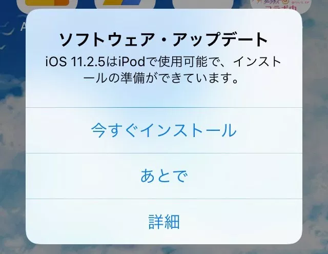
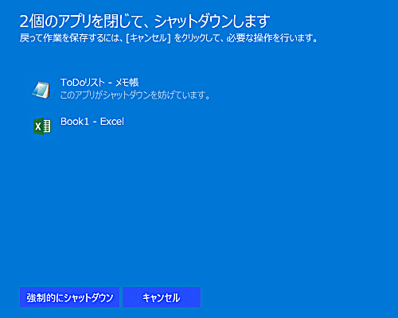

なぜ iOS のアップデートより Windows のアップデートは鬱陶しい・面倒くさいのか？
公開日：

iOS のアップデートもたいがい鬱陶しいと思うのだけど、巷では Windows のアップデートほど嫌われていない気がする（独断と偏見）。これはなぜなんだろう――と常々思っていたのだけど、単に思うだけではいつまで経っても答えが出ないので、現時点での考えをまとめておこうと思う。
本当はなぜ鬱陶しい・面倒くさいのかもきっちり分析するべき（プロセスが悪い、頻度が高すぎる、アップデート後のトラブルが怖い）なのだろうけど、今回はそういうのもひっくるめて、ざっくり3つの視点でまとめてみた。
OS の使い方
iOS デバイスをシャットダウンするのは、相当稀なことだろう。実際、シャットダウンのやり方を知らずに iPhone を使っている人は相当数いる（シャットダウン方法を解説して PV を稼ぐブログの数を見よ）。なかにはシャットダウンができると知らない――シャットダウンはバッテリーが尽きたときだけに行われると思い込んでいるヒトだっているかもしれない。
それだけ iOS はスリープ主体の使い方が根付いている。電源につないでおけば深夜にアップデートされて終わり。
一方、Windows はそういう使い方が根付いていない。PC を利用しない深夜は OS がシャットダウンされていて、アップデートが行えない。自然、どうしても作業中の時間からアップデートの時間を捻出してもらう必要があるのだが……まぁ、そういうところが嫌われるのはわかる。帰ろうと思って会社の PC をシャットダウンしたらアップデート始まったりね（まぁ、放置でいいんだが）。
Win8 いれようとシャットダウンしたらこれやで pic.twitter.com/FI4eI2PV
— だるやなぎ准将 (@daruyanagi) 2012年3月2日
あと、「作業中なのに勝手に再起動された！！」とかね。一応 Windows 10 には「アクティブ時間」っていう概念があってそれをコントロールしたら防げたりするんだけど、それを理解して設定できるほど人類の知能は発達していないし、またそれほど規則正しく暮らしている人類もけっして多くはない。
そもそも最近の Windows を「わざわざシャットダウンする」必要はないと思ってるんだけど、その点に関しては5年以上前になんか書いてたからそっちでも読んで。
対策
- 勝手に再起動される、作業を中断しないで
- 「アクティブ時間」をちゃんと設定する
- Windows Update のコントロールをしたいなら Pro を買う（ここだけの話、Home ユーザーはアップデートによるトラブルあぶり出しのための生贄なので）
- こまめに作業内容を保存する、またはモダンなアプリ（後述）を使うようにする
- 寝てるときにアップデートしといてほしい：（自分の場合）PC の電源を切らない、モニターの OFF だけにしとく（あまりお勧めはしない）
- 業務 PC なのにコンシューマー（Home）OS つかってるヤツは、文句を言う相手が間違ってると思う
個人的には「勝手に（？）アップデートされる」よりも iOS みたいに「アップデートしなきゃダイアログが鬱陶しい」方が結果としてはヘイトが溜まらないのかなとも感じる。作業を失った恨みは、ダイアログの鬱陶しさ（しかも、その通りにすれば1回で済む）より深いだろうしね。
アプリが邪魔をする
iOS のアプリは OS に厳重に管理されていて、自由度が低い。OS が「アップデートのために再起動するよ」といえば、それに逆らえない。
一方、Windows はもともとアプリの裁量が大きくて、基本的に何でもできる。OS が「アップデートのために再起動するよ」といっても、「ちょっと待って」と言える。

Windows の歴史は、「アプリに好き勝手させない、とくに危ないことをさせない」ようにしてきた（失敗の）歴史とみることもできる。Microsoft の互換性維持にかける情熱は気違いじみてるけど、ときどきヘマをやらかすのはだいたい「セキュリティを厳しくした」ときだ。OS も悪いけど、好き勝手やってるアプリもだいぶ悪い（でも、そういうアプリに限って改修されない）。そういうアプリがあると、アップデートのプロセスは複雑になるし、アップデート後に不具合が出ることも多くなる。
また、アプリの文化も iOS とはかなり異なる。iOS アプリには基本的に「保存する」という概念がない――いつ中断されてもいいように常に備えている。けれど、Windows のアプリはそうなっているものがまだまだ少ない*1。OS の管理よりもアプリの都合の方が優先されているのが当たり前な世界なので、アップデートの再起動はそれを阻む悪者になりやすい。
対策
- アクティブにメンテナンスされているアプリを使う
- セキュリティとリソース節約に優れたモダンなアプリに移行する
- よくわかんないソフトは入れない、セキュリティソフトは Windows Defender（OS 標準のヤツ）だけでいいよ
- Windows S とかでもいいんじゃないかな、自分は PowerShell とか使えないの痛すぎてイヤだけど
ユーザーの利用頻度
以前、「Windows はアップデートばっかり」という感想を Twitter で耳にしたのだけど、そのあとに続いていたのはこんな言葉だった――「まぁ、Windows マシンなんて月に数回しか電源入れないんだけどｗ」。そりゃ、「アップデートばかり」という感想にもなりますわね。Windows のアップデートは基本的に月1回なので（がんばってそういう運用を守ってほしい＞Microsoft）、月に3回しか Windows マシンを使わない人は、3回に1回は Windows をアップデートしている計算になる。
その点、iOS は（スマホ中毒者の場合）24時間365日使ってるわけで……しかも、アップデートの頻度も Windows より少ない。月に数回しか Windows を使わない人にとって、iOS のアップデートは体感ベースでは1/10以下に感じるはずだ。
対策
- 用事がなくてもたまには電源を入れてあげて。最近の OS なら「シャットダウンの開始 → アップデート適用 → シャットダウン（昔の OS はここまで）→ 起動 → アップデートの適用 → ロック画面」 まで一度行って、そこでシャットダウンするはず。次回起動したらすぐに OS を使い始められるはずだよ
- OS のアップデートにかかる時間は、バージョンを経るごとに削減されている。次期バージョンへの搭載はキャンセルされるらしいけど、機械学習（？）を使って邪魔にならないタイミングでのアップデートを試みる機能なんかも追加されるらしい。アップデートを楽にするためにアップデートするってのもなんか変な話だけど、OS は新しいに越したことはないよ
ほかにもいろいろありそうだけど、今回は「3つに絞る」と約束したのでこの程度にしておく。
*1:最近は少し変わってきて、たとえば Word は OneDrive のドキュメントを扱っていると自動で保存してくれるようになってる。UWP は既存のアプリとライフサイクルが違って"サスペンド”という概念がある